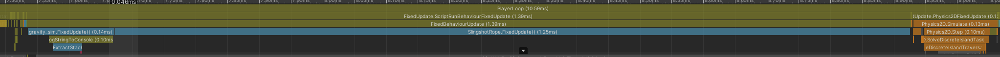

For the second iteration, I would have prefered to work on something else like better haptic integration. However when combining the planetary simulation with the haptic preset, issues with performance occured and as such I was plagued with trying to reprogram the tools for the past two weeks.
When the Unity physics engine has too many celestial objects that it needs to keep track of, it can do one of two things, the celestial bodie’s orbit either becomes completely chaotic and or they just stop moving. My challenge was to optimize the code so as to no longer have such an issue.
using System.Collections.Generic;
using System.Diagnostics;
using System.Threading;
using System.Threading.Tasks;
using UnityEngine;
using static Slingshot;
using Debug = UnityEngine.Debug;
public class gravity_sim : MonoBehaviour {
[SerializeField]
public float gravitationalConstant = 6.67e-11f; //1000f;
public float physicsTimeStep = 0.001f;
public float sun_mass = 1e+06f;
private float sub_mass;
private object m_ConcurrentDataLock;
private int m_Steps;
private int m_Frames;
private int m_DrawSteps;
private int m_DrawFrames;
private Task g_SimulationLoopTask;
GameObject[] celestials;
planet[] planet_vals;
private void Awake()
{
celestials = GameObject.FindGameObjectsWithTag("Celestial");
planet_vals = FindObjectsOfType<planet> ();
int size = celestials.Length;
Time.fixedDeltaTime = physicsTimeStep;
Debug.Log("Setting fixedDeltaTime to: " + gravitationalConstant);
SetInitialVelocity();
}
void FixedUpdate()
{
for (int i = 0; i < celestials.Length; i++)
{
GameObject main_planet = celestials[i];
Vector2 accel = Vector2.zero;
foreach (GameObject sub_planet in celestials)
{
if (!main_planet.Equals(sub_planet))
{
sub_mass = sub_planet.GetComponent<Rigidbody2D>().mass;
float r = Vector2.Distance(main_planet.transform.position, sub_planet.transform.position);
accel += (Vector2)(sub_planet.transform.position - main_planet.transform.position).normalized * gravitationalConstant * sub_mass / (r * r);
}
}
planet_vals[i].vel += accel * physicsTimeStep;
//Debug.Log(accel);
}
for (int i = 0; i < celestials.Length; i++)
{
//if (celestials[i].name != "Sun")
celestials[i].GetComponent<Rigidbody2D>().MovePosition(celestials[i].GetComponent<Rigidbody2D>().position + planet_vals[i].vel * physicsTimeStep);
}
}
private void SetInitialVelocity()
{
Debug.Log("Setting Initial Velocity...\n");
for (int i = 0; i < celestials.Length; i++)
{
GameObject main_planet = celestials[i];
Debug.Log(main_planet.name);
foreach (GameObject sub_planet in celestials)
{
if (!main_planet.Equals(sub_planet))
{
float sub_planet_mass = sub_planet.GetComponent<Rigidbody2D>().mass;
float r = Vector2.Distance(main_planet.transform.position, sub_planet.transform.position);
Vector2 vel = (Vector2)main_planet.transform.right * Mathf.Sqrt((gravitationalConstant * sub_planet_mass) / r);
Debug.Log(vel.y);
planet_vals[i].vel += vel;
}
}
}
}
}The way each planet’s gravitational attraction is calculated is by first determining their initial velocities to “stay in orbit around the sun” and continue to update the planets positions using their RigidBody2D components. Technically, the next challenge faced here is placing the planets so that their orbits are maintained, like a moon rotating around their planet and not the sun. This can be done in a few ways. One way would be to use the Line Render to render the next few thousand steps of the planet to see how it orbits it and then tune it’s position, mass and initial velocity to allow for orbit.
It might not seem big, but a lot of research went into understanding how the physics engine and task scheduling of unity works. With the Haply computations happening in parralel using tasks, the issue with performance would not lie there but rather in the rest of the events. We calculate simple engines, a ship, a slignshot, and a solar system all in series. Meaning that there is little space for the computations of the planets positions.

As such the orbit calculations on their separate channel might be the most beneficial in this situations.
What could be more interesting (as a thought) is placing each planet in their own task so that they perform their computations in parallel.
As it is, the solar system simulation needs to be parallelized to show even more noticeable performance, same can go for all the other methods used in the project.
In terms of haptics, the relative change in the end effector decides the propulsion of the ships engines, what would be beneficial is to first have a callibration face at the beginning to give the user time to center the end effector and then have the end effector change be referenced to the calibrated zero and fire the engines with regard to it.